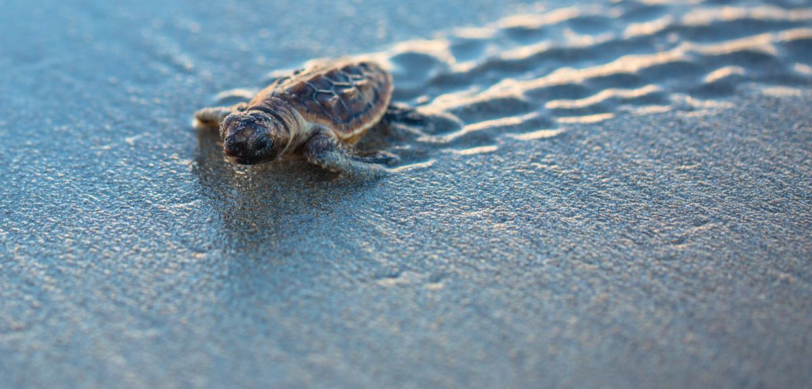

Kosgoda Turtle Hatchery
Kosgoda, a coastal location in Sri Lanka, entices visitors with its spectacular natural beauty and the opportunity to participate actively in turtle conservation efforts. The location has beautiful golden beaches, bright blue waters, and a peaceful atmosphere that draws visitors in. Travelers are drawn to the hatchery by the rare opportunity to see nesting turtles and the hatching of baby turtles. Furthermore, the beaches provide excellent snorkeling and diving opportunities, allowing visitors to encounter bright coral reefs and a diverse range of marine life. Kosgoda blends natural beaches, turtle conservation initiatives, and marine adventures to create an enchanting place that offers both peace and the opportunity to help with wildlife preservation.
